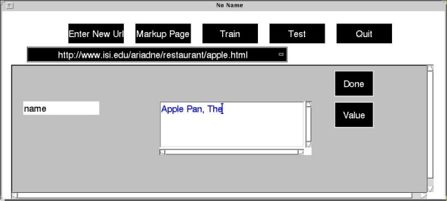
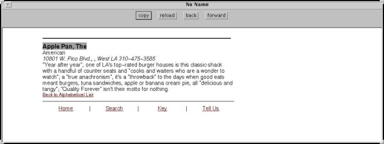

STEP 2:
the GUI opens the target-page in a browser and allows you to introduce
the an attribute name (e.g., name) and to cut-and-paste its corresponding
value (i.e., Apple Pan, The) from the browser in which the target-page
is displayed.


Last
modified: Wed Jul 22 17:04:39 PDT 1998